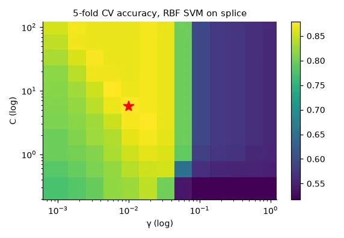
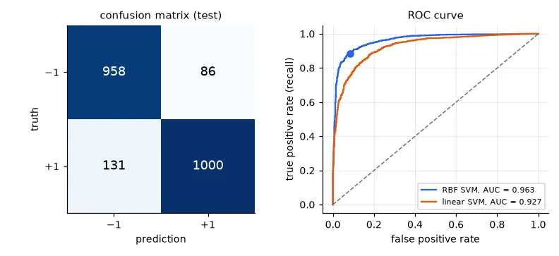
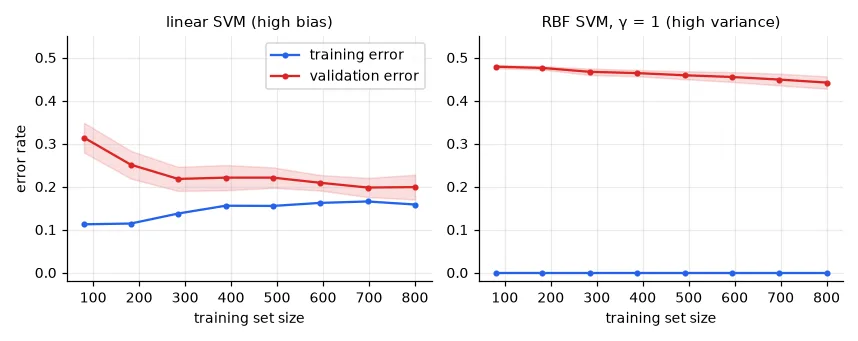

The problem with a single validation split#
In lessons 01 and 05 we chose hyper-parameters on one validation set. With 1,000 samples, a validation set of a few hundred gives accuracies with a standard error of 2–3 percentage points — as large as the differences we were trying to detect. And we threw away a third of the data for training.
k-fold cross-validation fixes both: cut the training data into \(k\) folds, train \(k\) times, each time validating on a different fold, and average. Every sample is used for validation exactly once and for training \(k-1\) times.
The data for this lesson is the splice dataset (LIBSVM): 60 DNA nucleotides around a position, and whether that position is an exon/intron boundary — a real bioinformatics task.
BASE = "https://www.csie.ntu.edu.tw/~cjlin/libsvmtools/datasets/binary/"
X, y = load_svmlight_file(str(U.fetch(BASE + "splice", "splice")))
Xt, yt = load_svmlight_file(str(U.fetch(BASE + "splice.t", "splice.t")), n_features=X.shape[1])
X, Xt = X.toarray(), Xt.toarray() # (1000, 60) and (2175, 60), labels in {-1, +1}
print("train", X.shape, "test", Xt.shape, "| class balance: %.1f%% / %.1f%% positive"
% (100 * np.mean(y > 0), 100 * np.mean(yt > 0)))
train (1000, 60) test (2175, 60) | class balance: 51.7% / 52.0% positive
Balanced classes, so accuracy is a meaningful metric here (more on that below).
Cross-validation from scratch#
def kfold_indices(n, k, rng):
"""Shuffle once, cut into k folds; each fold is the validation set exactly once."""
folds = np.array_split(rng.permutation(n), k)
for i in range(k):
val = folds[i]
train = np.concatenate([folds[j] for j in range(k) if j != i])
yield train, val
model = make_pipeline(StandardScaler(), SVC(kernel="rbf", C=1, gamma=0.01))
scores = []
for tr, va in kfold_indices(len(y), 5, np.random.default_rng(0)):
model.fit(X[tr], y[tr]) # the scaler is refitted on each training fold
scores.append(model.score(X[va], y[va]))
print("5-fold accuracy from scratch: %s -> %.3f ± %.3f" % (np.round(scores, 3), np.mean(scores), np.std(scores)))
cv = StratifiedKFold(5, shuffle=True, random_state=0)
s = cross_val_score(model, X, y, cv=cv)
print("cross_val_score (stratified): %.3f ± %.3f" % (s.mean(), s.std()))
5-fold accuracy from scratch: [0.815 0.87 0.89 0.875 0.875] -> 0.865 ± 0.026
cross_val_score (stratified): 0.851 ± 0.021
Look at the spread across folds: from 81.5% to 89%, for the same model. A single validation split could have told you anything in that range. (The two means differ because the folds differ — by about one standard deviation, which is exactly the point.)
The pipeline is the model
make_pipeline(StandardScaler(), SVC(...)) glues preprocessing and classifier into one estimator. When cross-validation calls fit on a training fold, the scaler is fitted on that fold only, and the validation fold is transformed with its statistics. Writing the scaling outside the loop — X = scaler.fit_transform(X) before cross-validating — leaks the validation folds' mean and variance into training (lesson 01's warning, in a form that is easy to miss). With a pipeline the mistake cannot be made.
Grid search#
GridSearchCV runs cross-validation for every combination of hyper-parameters and refits the best one on the whole training set:
Cs, gammas = np.logspace(-0.5, 2, 11), np.logspace(-3, 0, 13)
search = GridSearchCV(make_pipeline(StandardScaler(), SVC(kernel="rbf")),
{"svc__C": Cs, "svc__gamma": gammas}, cv=cv, n_jobs=-1)
search.fit(X, y)
print("best:", {k: round(float(v), 4) for k, v in search.best_params_.items()},
"cross-validated accuracy %.3f" % search.best_score_)
grid = search.cv_results_["mean_test_score"].reshape(len(Cs), len(gammas)) # rows: C, columns: gamma
print("test accuracy of the refitted best model: %.3f" % search.score(Xt, yt))
lin = GridSearchCV(make_pipeline(StandardScaler(), SVC(kernel="linear")), {"svc__C": np.logspace(-3, 1, 9)}, cv=cv)
lin.fit(X, y)
print("linear SVM: C = %g, CV accuracy %.3f, test accuracy %.3f"
% (lin.best_params_["svc__C"], lin.best_score_, lin.score(Xt, yt)))
best: {'svc__C': 5.6234, 'svc__gamma': 0.01} cross-validated accuracy 0.879
test accuracy of the refitted best model: 0.900
linear SVM: C = 0.01, CV accuracy 0.801, test accuracy 0.847

The RBF kernel beats the linear one by 5 points on the test set, and the cross-validation ranking predicted it.
Plotting a log grid with linear axes (and upside down)
My lab version drew the scores with plt.imshow(scores.reshape(25, 25), extent=[min(gamma), max(gamma), min(C), max(C)]). Three problems hide in that line: the grid is logarithmic but the extent is linear, so 24 of the 25 γ columns are squeezed near zero; imshow puts row 0 at the top while the extent labels the top with the largest C, so the C axis is flipped; and the reshape order (rows = C, columns = γ, as ParameterGrid iterates) only works because both grids had 25 values. pcolormesh(gammas, Cs, grid) with log axes uses the real coordinates and avoids all three.
Beyond accuracy#
Accuracy hides which errors a model makes. The confusion matrix counts them:
best = search.best_estimator_
pred = best.predict(Xt)
cm = confusion_matrix(yt, pred) # rows: truth, columns: prediction
tn, fp, fn, tp = cm.ravel()
print("confusion matrix [[TN FP] [FN TP]] =", cm.tolist())
print("accuracy %.3f | precision %.3f | recall %.3f | F1 %.3f"
% ((tp + tn) / cm.sum(), precision_score(yt, pred), recall_score(yt, pred), f1_score(yt, pred)))
score = best.decision_function(Xt) # signed distance to the boundary
print("ROC AUC %.3f" % roc_auc_score(yt, score))
confusion matrix [[TN FP] [FN TP]] = [[958, 86], [131, 1000]]
accuracy 0.900 | precision 0.921 | recall 0.884 | F1 0.902
ROC AUC 0.963
- Precision \(= TP/(TP+FP)\): when the model says "boundary", how often is it right?
- Recall (sensitivity) \(= TP/(TP+FN)\): of all true boundaries, how many did it find?
- F1: their harmonic mean — high only if both are.
They matter when classes are imbalanced or errors have different costs. A cancer screening wants high recall (a missed tumour is worse than a false alarm); a spam filter wants high precision (a lost legitimate e-mail is worse than a spam in the inbox). On a dataset with 1% positives, "always negative" has 99% accuracy and 0% recall.
Most classifiers output a score, and the label is "score > threshold". Moving the threshold trades precision against recall. The ROC curve plots the true positive rate against the false positive rate for every threshold; the area under it (AUC) is the probability that a random positive gets a higher score than a random negative — a threshold-free summary.

Learning curves: bias or variance?#
When a model is not good enough, should you get more data, or a more flexible model? Train on growing subsets and plot training and validation error (Andrew Ng's classic advice):
sizes = np.linspace(0.1, 1.0, 8)
fig, axes = U.figure(2, 1, size=(3.9, 3.1))
for ax, (name, est) in zip(axes[0], [("linear SVM (high bias)", lin.best_estimator_),
("RBF SVM, γ = 1 (high variance)", make_pipeline(StandardScaler(), SVC(C=10, gamma=1)))]):
n, tr, va = learning_curve(est, X, y, cv=cv, train_sizes=sizes)
print(f"{name:32s} n = {n[-1]}: train {tr[-1].mean():.3f}, validation {va[-1].mean():.3f}")
ax.plot(n, 1 - tr.mean(1), "o-", ms=3, color=U.BLUE, label="training error")
ax.plot(n, 1 - va.mean(1), "o-", ms=3, color=U.RED, label="validation error")
ax.fill_between(n, 1 - va.mean(1) - va.std(1), 1 - va.mean(1) + va.std(1), color=U.RED, alpha=0.15)
ax.set_xlabel("training set size")
ax.set_title(name)
ax.set_ylim(-0.02, 0.55)
axes[0, 0].set_ylabel("error rate")
axes[0, 0].legend()
U.finish("learning-curves", fig)
linear SVM (high bias) n = 800: train 0.842, validation 0.801
RBF SVM, γ = 1 (high variance) n = 800: train 1.000, validation 0.558

| Symptom | Diagnosis | What helps |
|---|---|---|
| training error high, validation ≈ training | high bias (underfitting) | more flexible model, more/better features, less regularisation |
| training error low, validation much higher | high variance (overfitting) | more data, regularisation, simpler model, fewer features |
The protocol, in one list#
- Split off a test set first and lock it away.
- Put every preprocessing step in a pipeline with the model.
- Choose hyper-parameters (and models) by cross-validation on the training set.
- Refit the chosen pipeline on the whole training set.
- Evaluate once on the test set. Report the metric that matches the cost of errors, with the confusion matrix.
If the dataset is too small for a test set, use nested cross-validation (an outer loop for evaluation around the inner grid search) — cross_val_score(GridSearchCV(...), X, y).
Exercises#
- Implement stratification in
kfold_indices: split the indices of each class separately and merge the folds. Does the spread across folds shrink? - Run nested cross-validation on the 1,000 training sequences for the RBF pipeline. How does its estimate compare with the 0.879 of the grid search, and with the test accuracy?
- On the spam data of lesson 04, choose the decision threshold that gives at most 1% of legitimate e-mails classified as spam. What recall do you get?